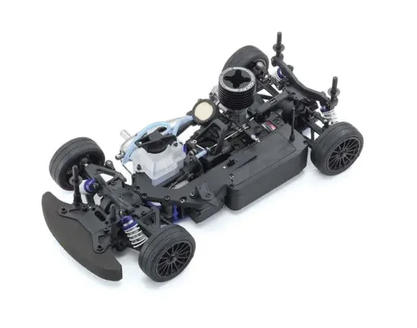

京商 FW-06

引用元画像：rcscrapyard.net / 京商公式サイト
📋 基本情報
| メーカー | 京商（Kyosho） |
|---|---|
| 機種名 | FW-06（PureTen GP） |
| シャーシ略称 | FW-06 |
| 型番 | 33216（最新モデル、2023年2月発売） 31368（Aston Martin DBR9）、31369（Porsche 911 GT3 RSR）、31373（AMG-Mercedes C-Klasse DTM）、31374（CHEVROLET CORVETTE C6-R）、33201-33210（2015-2019年モデル）など多数 |
| 発売時期 | 2007年（初期モデル）、2023年2月（最新モデル No.33216） |
| 価格 | ¥43,780（税込、最新モデル No.33216） |
| 生産状況 | 現行販売中（一部モデルは販売終了） |
| カテゴリー | ラジコンカー（1/10スケール GPツーリングカー） |
| サブカテゴリー | 4WD ツーリングカー（エンジン） |
| シリーズ | PureTen GP シリーズ |
📏 シャーシスペック（最新モデル No.33216）
| 全長 | 375mm |
|---|---|
| 全幅 | 200mm |
| 全高 | 詳細不明 |
| ホイールベース | 258mm |
| トレッド | フロント/リア 176mm |
| タイヤ幅/径 | フロント/リア φ66×25mm |
| フレーム | アルミプレートシャーシ |
| 全備重量 | 約1,800g（電装品別） |
⚙️ 駆動系
| 駆動方式 | シャフトドライブ4WD |
|---|---|
| デフギヤ | ギヤデフ（フロント・センター・リア） |
| ギヤ比 | 7.47 / 5.44:1（2種類から選択可能） |
| ギヤピッチ | 詳細不明 |
| トランスミッション | アルミプレートシャーシベース |
| ドライブシャフト | フロント：ユニバーサルジョイント リア：ドッグボーンドライブシャフト＋プロペラシャフト |
| エンジン | KE15SP（リコイルスターター付き）標準装備 |
🔧 サスペンション
| 形式 | 4輪ダブルウィッシュボーン独立懸架 |
|---|---|
| サスアーム | 詳細不明 |
| ダンパー | コイルスプリング＋オイルダンパー×4本 |
| アンチロールバー | 標準装備（フロント・リア） |
| ステアリング | 詳細不明 |
📦 キット内容（最新モデル No.33216）
- シャーシパーツ一式
- FAT701M TCタイヤ(M)＋インナースポンジ
- VZH003BKホイール（未接着）
- リコイルスターター付きKE15SPエンジン
- セッティング変更パーツ
- 1.5mm/2.0mm/2.5mm/5.0mm六角レンチ
- 十字レンチ（大）
- 3/4/5/5.5/7/8mm一体型スパナ
別途必要なもの
- 2ch送受信機（受信機サイズ：L45×W28×H22mm以下）推奨：京商製品 No.82147
- ボディ（別売）
- サーボ（ステアリング用×1、スロットル用×1）推奨：京商製品 No.82274
- 受信機用電源 推奨：京商製品 No.71353
- 送信機用電源（単三乾電池4本）
- スイッチ 推奨：京商製品 No.82142
- シリコンオイル（ダンパー、デフ用）
- グリス（リングギア、デフ用）
- GP スターティングツールセット 推奨：京商製品 No.73206
- 燃料ポンプ 推奨：京商製品 No.96424B
- 模型用グロー燃料
- 組立工具
💡 特徴
2007年から続くロングセラーシャーシ
- 2007年発売から現在まで続くPureTen GPシリーズの定番モデル
- 2023年2月に最新モデル（No.33216）が発売
- 長期間にわたり改良を重ねた完成度の高いシャーシ
豊富なボディバリエーション
- Aston Martin Racing DBR9 Le Mans 2006（31368）
- Porsche 911 GT3 RSR（31369、33203）
- AMG-Mercedes C-Klasse DTM 2007（31373）
- CHEVROLET CORVETTE C6-R 2007（31374、33202）
- AUDI R8 LMS（33201、33205、33210）
- Acura NSX GT3 Race Car（33208）
- Subaru Impreza WRC 2006（33209）
- その他多数のレーシングカーボディ展開
FW-05シリーズとの互換性
- FW-05シリーズ（FW-05S、FW-05T、FW-05RR）と多くのパーツを共有
- パーツ流用により修理の可能性向上
- 長年の実績による信頼性の高さ
競技向けの本格シャーシ構成
- シャフトドライブ4WDシステム採用
- アルミプレートシャーシで高剛性を実現
- 3つのギヤデフ搭載（フロント・センター・リア）
- アンチロールバー標準装備で安定したコーナリング
- フロントユニバーサルジョイント採用で滑らかな動作
- フルボールベアリング仕様
最高速度と性能
- 最高速度：約64km/h（走行条件により異なる）
- 2種類のギヤ比（7.47 / 5.44:1）でセッティング変更可能
🔧 ぽすとそに工房での修理実績
修理難易度
★★★☆☆（普通）
パーツ供給はあるが、一部生産終了かつ在庫入荷未定のため、修理は普通レベルの難易度です。FW-05シリーズとのパーツ互換性を活用できます。
よくある故障・注意点
- オイルダンパーのオイル漏れ（Oリング劣化）
- ギヤデフのギヤ摩耗（定期的なグリスアップ必要）
- ドライブシャフトの摩耗・破損
- シャーシのクラック（衝撃による）
- ボールジョイントの緩み・脱落
- KE15SPエンジンのメンテナンス必須
- 一部パーツが在庫入荷未定のため早めの確保推奨
修理のポイント
- FW-05シリーズ（FW-05S、FW-05T、FW-05RR）の互換パーツを活用
- オイルダンパーのOリング定期交換
- ギヤデフのグリスアップ（ZX1オイルまたはテフロンオイル推奨）
- ドライブシャフトはチタン製への交換推奨
- ボールジョイントは定期的にチェック・交換
- アルミシャーシは修正困難なため取り扱い注意
- 一部パーツは在庫があるうちに確保しておくと安心
その他の特徴
- 現行販売中のため新品入手可能（最新モデル No.33216）
- 一部モデルは販売終了しているが、パーツ供給は継続中
- 2007年から続くロングセラーモデルのため実績豊富
- 京商公式サイトでパーツリスト確認可能
- FW-05シリーズとのパーツ互換性により修理しやすい